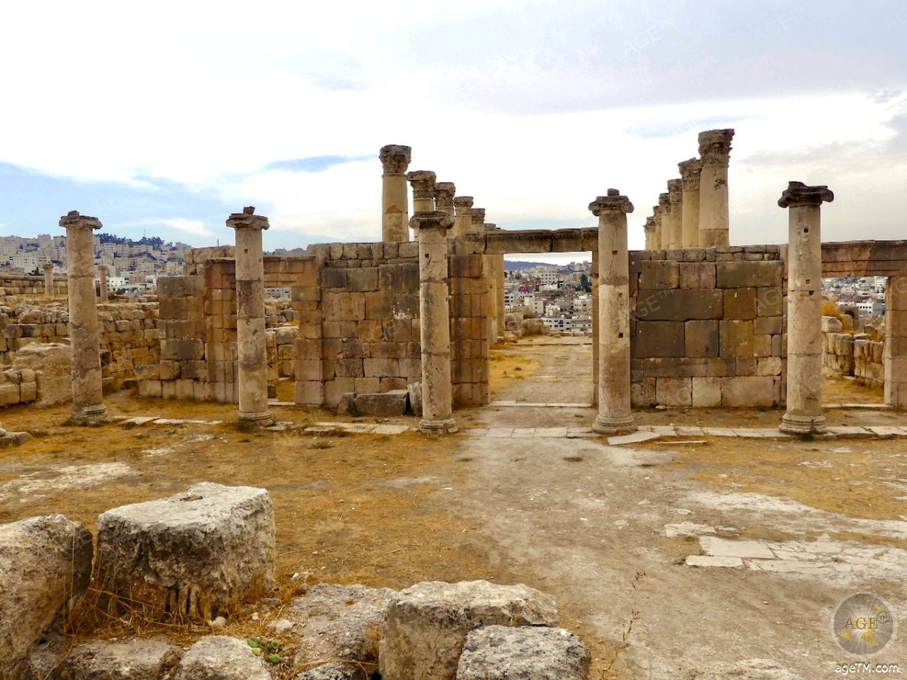

آثار جرش
تتميز مدينة جرش بثراء تاريخي هائل يتجلى في العديد من الآثار المهمة، ومن بينها:

بازيليك جرش
تُعتبر بازيليك جرش واحدة من أهم المعالم الرومانية في المنطقة.

مسرح جرش
يُعتبر مسرح جرش أحد أكبر المسارح الرومانية في الشرق الأوسط.
قوس النصر
هو قوس شرف تم بناؤه في القرن الثاني الميلادي للاحتفال بزيارة الإمبراطور هادريان إلى جرش.
معبد زيوس
يُعتبر معبد زيوس من أبرز المعالم الدينية في جرش، وكان مكرسًا لزيوس.